I am an Assistant Professor (Juniorprofessor) of Computer Science at the Karlsruhe Institute of Technology. Before joining KIT and HITS in 2022 I was a Senior Researcher at the Samsung AI Center Cambridge, UK, and prior to that a Research Scientist at Microsoft Zurich and a Researcher at Microsoft Research Cambridge, working with Sebastian Nowozin and Marc Pollefeys. Before joining Microsoft I was a Visiting Researcher at the Computer Science and Artificial Intelligence Laboratory (CSAIL) of the Massachusetts Institute of Technology (MIT). I obtained my Ph.D. in computer science at the Technical University of Munich, advised by Daniel Cremers, in collaboration with the TUM Institute for Advanced Study and the California Institute of Technology (Caltech).

Research
My group applies concepts from geometric deep learning for applications of machine learning in the natural sciences (AI for science). Can we utilize knowledge about the application domain to design better deep learning architectures that are more data-efficient and accurate? Our research aims to not only to design better architectures, but also to improve existing fundamental concepts of deep learning architectures for applying to non-standard data modalities. Representative projects include Geometric algebra flow matching, Set-LLM, and our work on Approximate Equivariance.
Group
- Torben Berndt
- Dominik Sucker
- Yunus Demirag (incoming PhD student Fall 2026)
- Anna Su (with Mark Gerstein and Jeffrey Brock at Yale University)
- Nicolas Wolf (with Frauke Gräter) at the Max Planck Institute for Polymer Research)
- Beni Egressy (postdoc 2025), Research Scientist, Aleph Alpha
- Leif Seute (PhD 2026, with Frauke Gräter) at the Max Planck Institute for Polymer Research.
2026
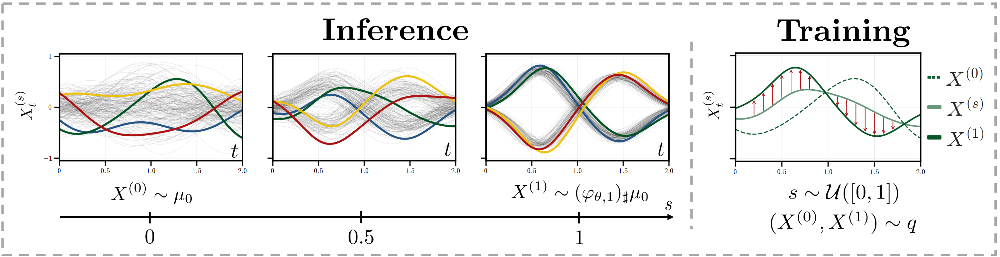
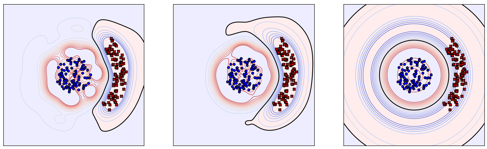
2025
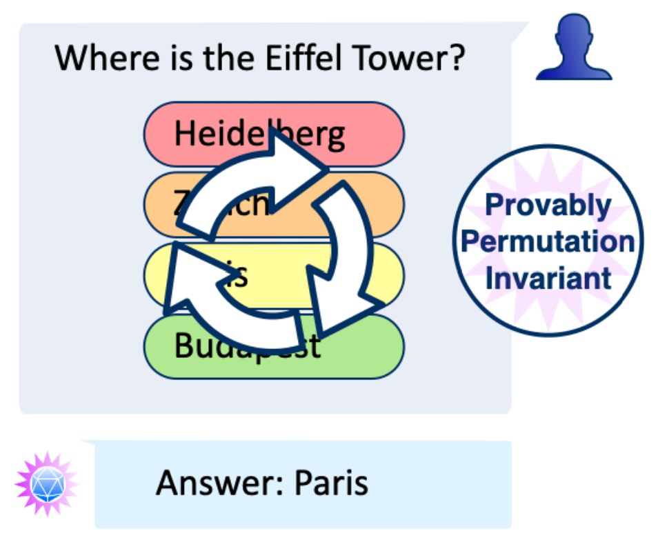
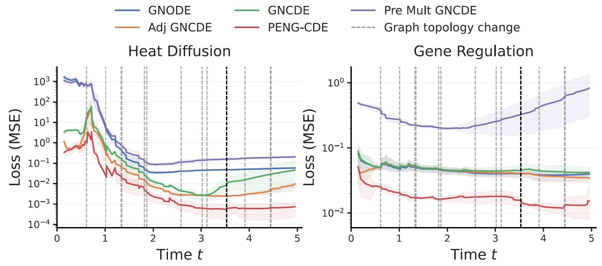
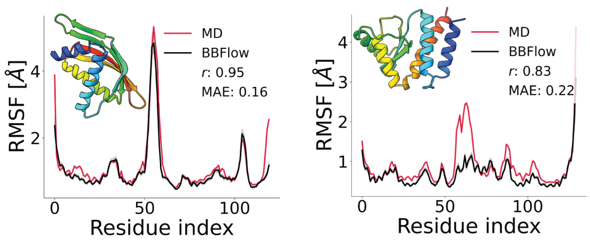
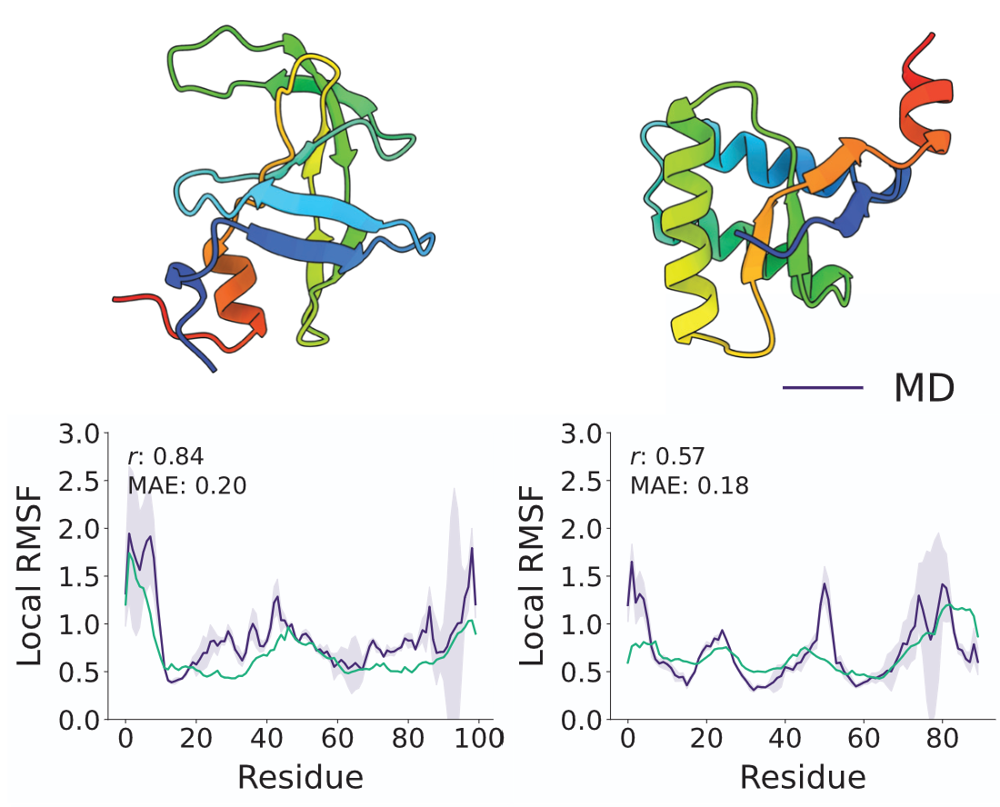
2024
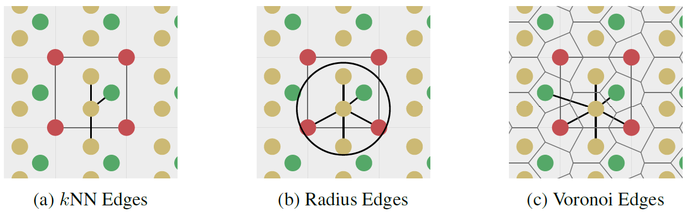
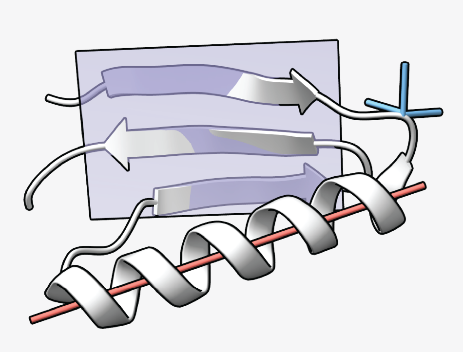
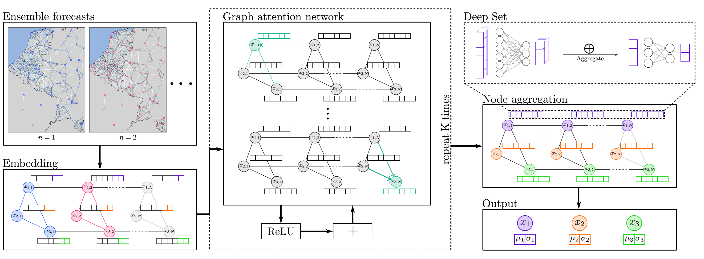
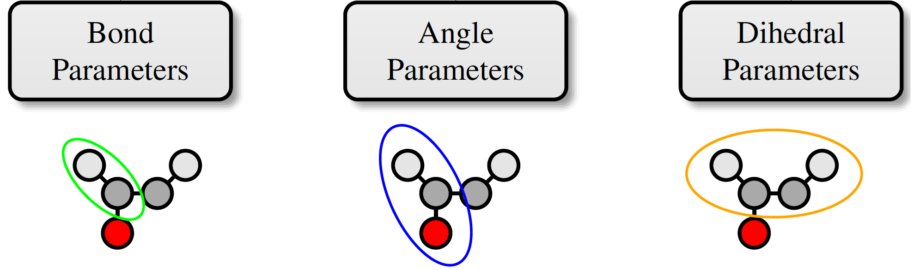
2023
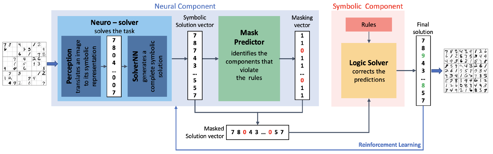
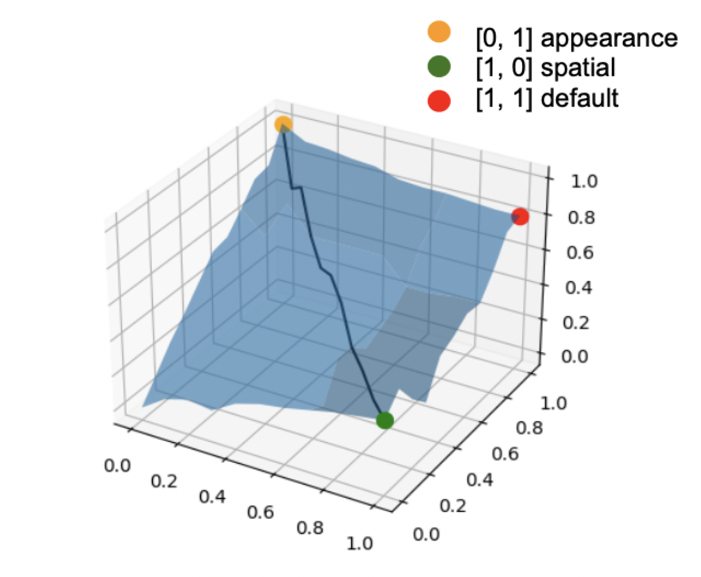
2022
2021
2020
2019
2018
2017
2015
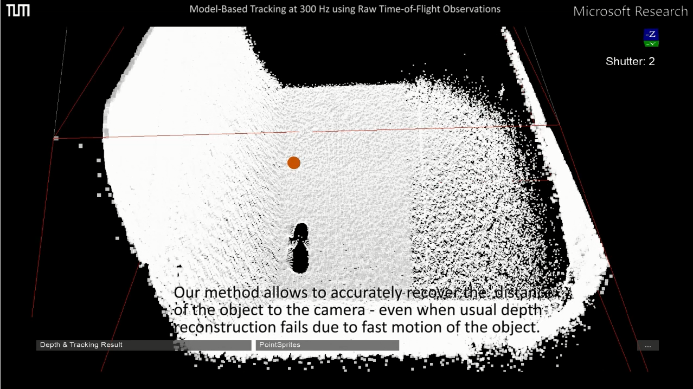
2014
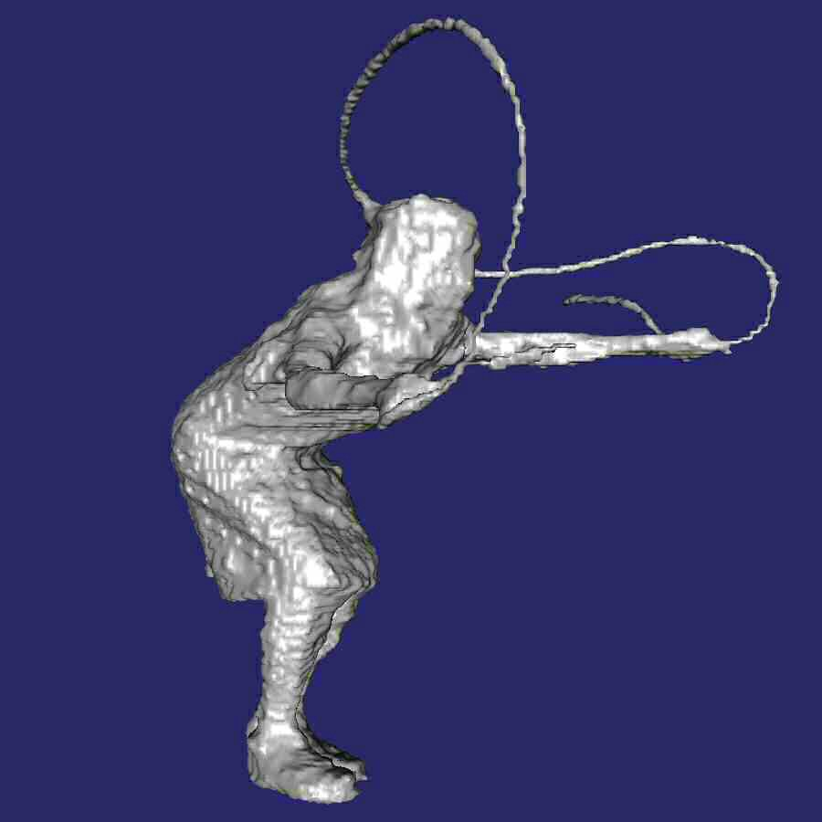
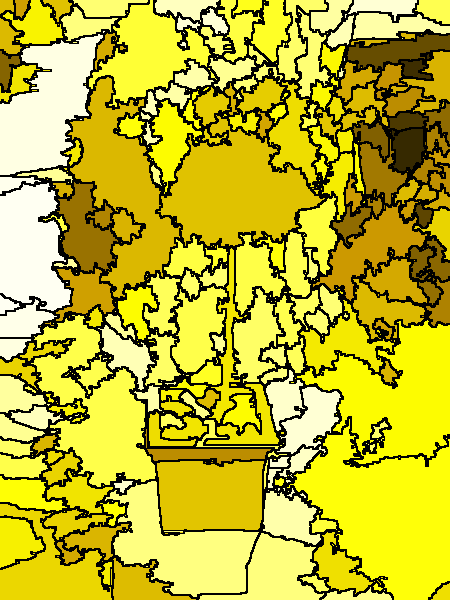
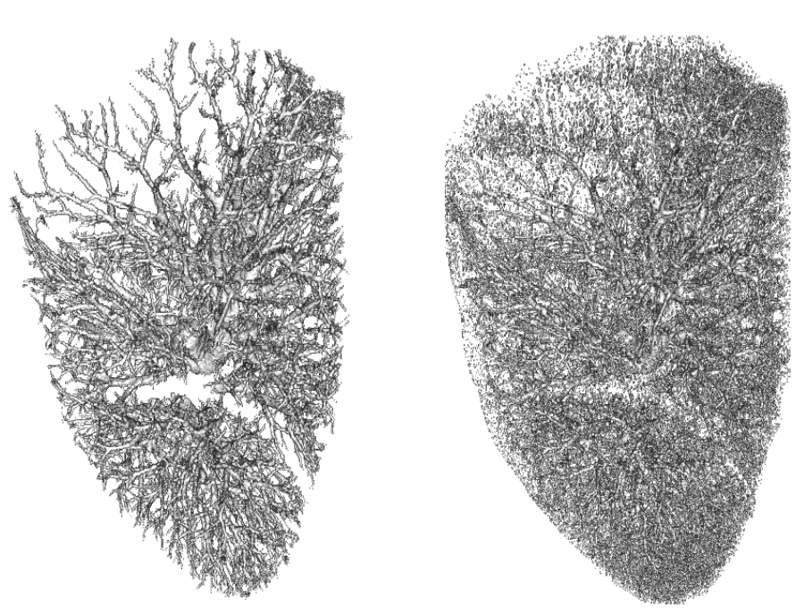
2013
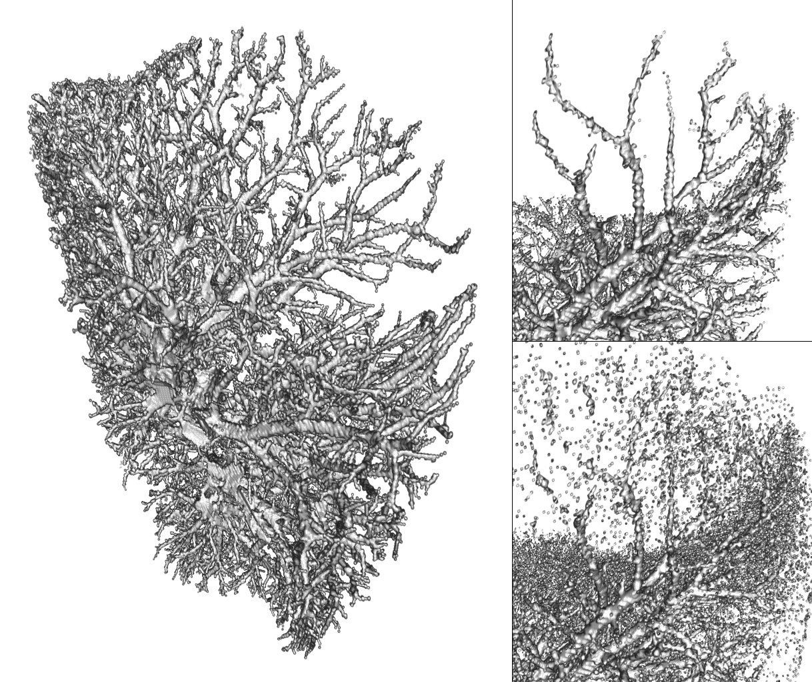
2010
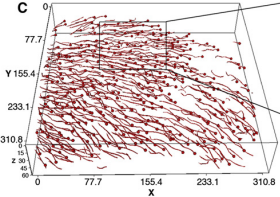
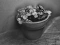
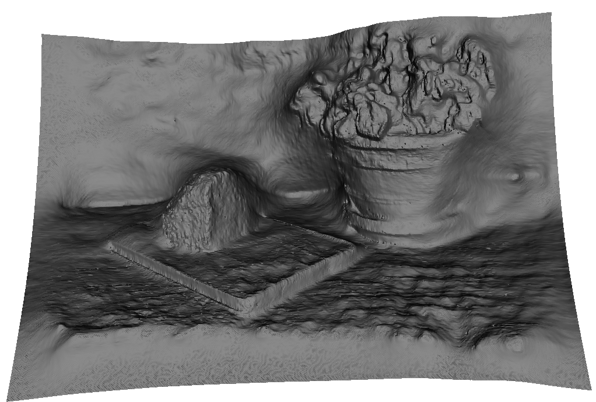
2009
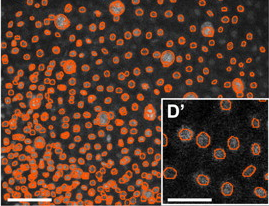